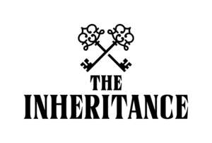

Trade Mark Journal No.2025/018 2 May 2025
UK00004166627 27 February 2025 (9,16,28,41)

- Class 9
- Scientific, nautical, surveying, photographic, cinematographic, optical, weighing, measuring, signalling, checking (supervision), life-saving and teaching apparatus and instruments; apparatus and instruments for conducting, switching, transforming, accumulating, regulating or controlling electricity; apparatus for recording, transmission or reproduction of sound or images; magnetic data carriers, recording discs; automatic vending machines and mechanisms for coin-operated apparatus; cash registers, calculating machines, data processing equipment and computers; apparatus for use in broadcasting, transmission, receiving, processing, reproducing, encoding and decoding of radio and television programmes and data; videos, CDs, CD roms, DVDs, mini-disks, CD-Is; audio, video and audio-visual recordings; cinematographical films; computer software; computer software supplied from the Internet; computer games software; electronic publications provided on-line from databases or the Internet; computer software and telecommunications apparatus to enable connection to databases and the Internet; digital music provided from the Internet; digital music provided from MP3 Internet websites.
- Class 16
- Printed matter; book binding material; photographs; stationery; adhesives for stationery or household purposes; artists' materials; paint brushes; typewriters and office requisites (except furniture); instructional and teaching material (except apparatus); plastic materials for packaging (not included in other classes); printers' type; printing blocks; printed publications; posters; photographs; calendars; guides; carrier bags; paper bags; printed programmes; writing instruments; pens, pencils, crayons; erasers; rulers; pencil sharpeners; pencil boxes and cases; pencil holders; photograph albums; ring binders; folders; notebooks; notepads; diaries; calendars; postcards; drawings (graphic); stickers; transfers (decalcomanias); stencils.
- Class 28
- Electronic games.
- Class 41
- Education; providing of training; entertainment; sporting and cultural activities; production, presentation, syndication, networking and rental of material with a visual and/or audio element, including television and radio programmes, films, sound and video recordings, interactive entertainment, CDIs, CD-Roms, computer games, live shows, stage plays, exhibitions and concerts; electronic games services provided by means of the Internet or any other communications network; publication services; information relating to education or entertainment, provided on line from a computer database or the Internet or by means of television or radio programmes; providing on-line electronic publications (not downloadable); publication of electronic books and journals on-line; provision of news information; providing digital music from the Internet (not downloadable); information and advisory services relating to the aforesaid.
GroupM Motion Entertainment Limited
Studio Lambert Media Limited
Representative: Stobbs